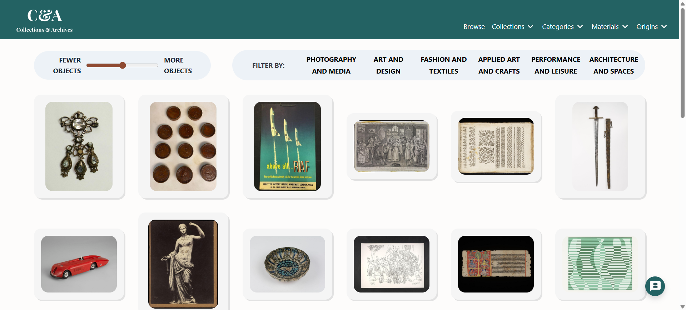
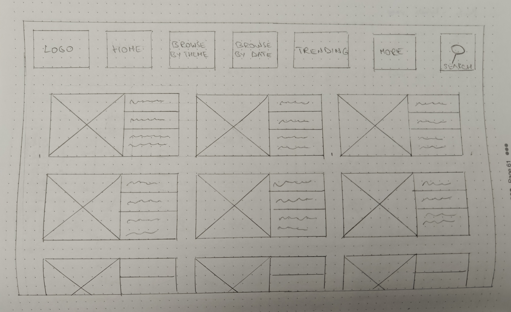
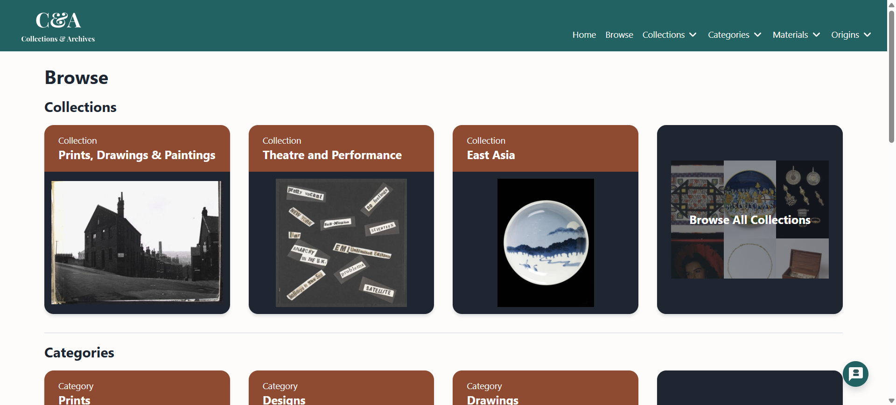
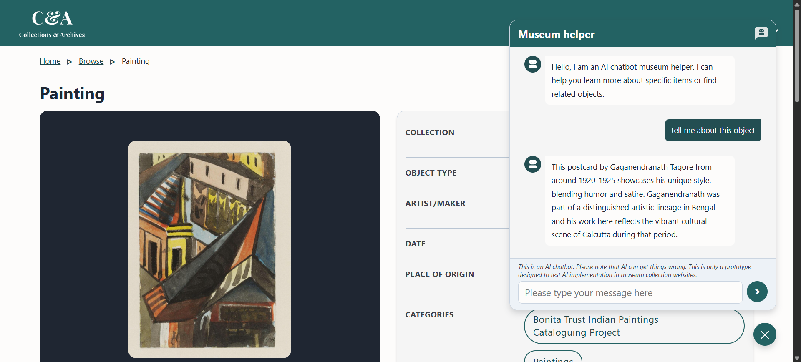

Collections & Archives
Final year research project (CIS3425): a generous interface for exploring 2.2 million objects from the V&A Collections API, evaluated through comparative user testing. Deployed on Netlify.
- HTML5
- CSS3
- JavaScript
- REST API
- AI / LLM
- Netlify
Overview
Final year project for CIS3425 at Edge Hill University, supervised by David Walsh. Investigates how generous interface design combined with AI features influences user engagement and casual exploration in digital museum collections, evaluated through comparative user testing against the existing V&A website.
A generous interface shows a large amount of content immediately in order to support open browsing and serendipitous discovery, rather than requiring visitors to have a specific object in mind before they begin. The term comes from academic research on digital cultural heritage, describing the opposite of a blank search box.

The Problem
The research motivation emerged from a gap between what the V&A Collections API makes available and how the official website surfaces it to visitors who do not already have a specific object in mind.
- The V&A Collections API exposes 2.2 million objects with rich metadata, but the official website leads with a search box that requires visitors to already know what they are looking for
- Academic research shows casual visitors prefer browsing over searching (Morse et al., 2021; Speakman et al., 2018); a search-led interface excludes anyone arriving without intent
- A small user study conducted as part of the research confirmed this: participants reported feeling uncertain where to start when no search term came to mind
Requirements Gathering
Requirements were extracted from four sequential evidence-gathering stages before any design or development work began. A structured literature review of 15+ academic sources on museum engagement and generous interface principles ran alongside desk research that analysed 20 digital museum platforms, establishing the theoretical foundation and identifying the gap between academic recommendations and current industry practice. This was followed by an online questionnaire completed by 23 respondents, which confirmed a preference for visual exploration and found that specific AI features such as contextual explanations and related item recommendations were rated positively even among respondents who expressed general scepticism about AI assistants. The third stage was a small-scale exploratory user study on the existing V&A Collections website, where participants completed three tasks: locating a specific object by name, finding an object matching particular criteria and freely exploring for up to three minutes. Scrolling activity during free exploration was more than 300% higher than during directed search and post-task semi-structured interviews surfaced recurring themes of wanting more visual content on arrival, clearer return pathways after viewing an object and richer item detail. These four stages produced 10 functional requirements, 7 non-functional requirements and 9 user stories.
Functional
- FR1 Visual Homepage (Must): Display artefacts visually on arrival, requiring no search query to begin browsing.
- FR2 Rich Artefact Pages (Must): Detailed pages featuring contextual metadata and related item recommendations.
- FR3 Clear Navigation Hierarchy (Must): A structured navigation system providing multiple distinct pathways into the collection.
- FR4 AI Chat Assistant (Must): Conversational assistant for contextual Q&A scoped to the currently viewed object.
- FR5 V&A API Integration (Must): Live integration with the V&A Collections API for all collection data.
- FR6 Random Discovery (Should): Features to surface unexpected objects and support serendipitous browsing.
- FR7 Visual Similarity Browsing (Could): Ability to browse the collection based on aesthetic and visual characteristics.
- FR8 Easy Return Pathways (Should): Clear pathways to bring users back to their previous browse state after viewing an object.
- FR9 AI Context Explanations (Should): AI-generated explanations to supplement sparse or technical metadata.
- FR10 Search Support (Could): Standard search functionality to support targeted queries.
Non-functional
- NFR1 Mobile and Desktop Responsive Design (Must): Responsive design targeting 1280px and above, while retaining a functional mobile view.
- NFR2 Fast Loading (Optimisation) (Must): Optimised API strategy to stay within rate limits and maintain fast page loads.
- NFR3 Consistent Visual Design (Must): A unified visual language with a clear distinction between interactive and non-interactive elements.
- NFR4 Transparent AI Behaviour (Must): Clear labelling of AI components and grounding responses in museum data.
- NFR5 V&A API Compliance (Must): Adherence to all V&A API attribution and data usage terms.
- NFR6 Accessible Design (Should): Inclusion of accessibility standards to ensure use by a diverse range of visitors.
- NFR7 Privacy-First Design (Should): Ensuring no user data is stored or transmitted beyond the active session.
Design
Research-led process
- Literature review of 15+ academic sources covering museum engagement, browsing behaviour and generous interface principles
- 10 functional requirements, 7 non-functional requirements, 9 user stories derived from research and user study
- High-fidelity Figma designs for all main views before any code was written
Desktop-first (not mobile-first)
Initial mockups were designed mobile-first; however, the generous interface literature made it clear this was not the appropriate starting point. Generous interfaces depend on showing a large quantity of visual content simultaneously in order to support open browsing and serendipitous discovery, a goal that is fundamentally harder to achieve on small screens. The prototype was reoriented to target 1280px and above as its primary experience, with a reduced but functional mobile view retained.

Browsing pathways, chosen via API analysis
- Collections
- Objects 309,000
- Included Yes
- Categories
- Objects 104,000
- Included Yes
- Materials
- Objects 106,000
- Included Yes
- Origins
- Objects 69,000
- Included Yes
- Period / Date
- Objects varies
- Included No, date formatting inconsistent across objects
- Creator
- Objects varies
- Included No, high proportion of unknown makers
Search deliberately removed
Originally planned but descoped to keep the interface focused on visual discovery. A user who does not know the name of what they are looking for should still be able to find something interesting.
The Solution
API strategy
- Two-endpoint approach: lightweight list endpoint for browse grid (IDs and thumbnails only); full detail endpoint called only when a user opens an object page
- Defensive field handling based on API availability analysis, fields with full coverage always shown and partial-coverage fields handled individually
- Primary image, collection, object type, date, description
- Coverage Full
- Handling Always displayed
- Artist / maker
- Coverage 3 of 6 sampled
- Handling "Maker unknown" fallback
- Place of origin
- Coverage Partial
- Handling Shown when present, hidden when absent
- Historical context
- Coverage 1 of 6 sampled
- Handling Expandable section, not a fixed layout element
AI assistant
- Model: Qwen2.5-7B-Instruct via Hugging Face Inference API
- Open-source model chosen deliberately, no per-token cost at portfolio usage levels; sufficient capability for scoped museum Q&A without a frontier model
- Netlify serverless function proxies the Hugging Face API call, API key never exposed to the client
- Has access to the current object's metadata; conversation history limited to last four exchanges to stay within token limits while preserving follow-up context
- Labelled as AI throughout, users are never uncertain whether they are talking to a person or a model

Development Process
- Design before code: high-fidelity Figma for all pages (homepage, browse landing, browse pages, object detail, AI chat) before implementation began; development had clear targets rather than evolving structure
- API field analysis during design: sampled real objects and recorded which fields were populated; made defensive handling targeted rather than guesswork, and prevented significant rework during development
- AI prompt design: system prompt scopes responses to museum and cultural heritage topics; explicitly instructs the model to say when it does not have enough information rather than speculating
- Comparative user testing: 10+ participants planned; same exploration tasks on Collections & Archives and the V&A website; quantitative interaction data plus qualitative interview feedback

Outcome and Reflection
Live at collectionsarchives.netlify.app, browsing, object detail viewing and AI conversation without a user account or local setup.
The research-led process (literature review, user study, requirements, Figma, build) produced a more considered interface than building to instinct would have, and the API analysis during design prevented rework during implementation.
The main thing I would revisit is the pagination strategy. The current batch-loading approach disrupts scroll position when navigating between batches and leaves keyboard users without a clear focus target. An infinite scroll or "load more" pattern with focus moving to the first newly loaded item would better serve the generous interface goal of frictionless exploration.